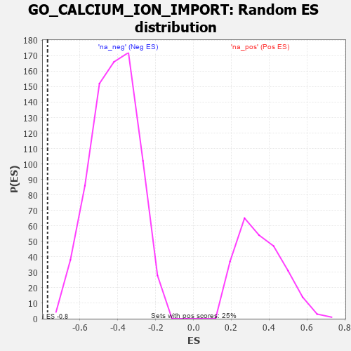

| | | Dataset | 7d |
| Phenotype | NoPhenotypeAvailable |
| Upregulated in class | na_neg |
| GeneSet | GO_CALCIUM_ION_IMPORT |
| Enrichment Score (ES) | -0.7697366 |
| Normalized Enrichment Score (NES) | -1.8349634 |
| Nominal p-value | 0.0 |
| FDR q-value | 0.010371493 |
| FWER p-Value | 0.255 |
Table: GSEA Results Summary
 Fig 1: Enrichment plot: GO_CALCIUM_ION_IMPORT
Fig 1: Enrichment plot: GO_CALCIUM_ION_IMPORT
Profile of the Running ES Score & Positions of GeneSet Members on the Rank Ordered List
| PROBE | GENE SYMBOL | GENE_TITLE | RANK IN GENE LIST | RANK METRIC SCORE | RUNNING ES | CORE ENRICHMENT | | 1 | MCUR1 | | | 1953 | 0.313 | -0.2248 | No |
| 2 | MICU1 | | | 1954 | 0.313 | -0.2041 | No |
| 3 | CDK5 | | | 3480 | 0.080 | -0.3904 | No |
| 4 | WNK3 | | | 4153 | -0.034 | -0.4727 | No |
| 5 | OPA1 | | | 4330 | -0.065 | -0.4904 | No |
| 6 | PLPP4 | | | 4533 | -0.101 | -0.5091 | No |
| 7 | MICU3 | | | 4571 | -0.110 | -0.5065 | No |
| 8 | CALCR | | | 5730 | -0.386 | -0.6265 | No |
| 9 | DYSF | | | 6481 | -0.654 | -0.6775 | Yes |
| 10 | TRPV4 | | | 6515 | -0.668 | -0.6374 | Yes |
| 11 | TRPV6 | | | 7569 | -1.502 | -0.6703 | Yes |
| 12 | MCU | | | 7644 | -1.637 | -0.5712 | Yes |
| 13 | TRPM2 | | | 7680 | -1.712 | -0.4623 | Yes |
| 14 | PKD2 | | | 7822 | -2.167 | -0.3365 | Yes |
| 15 | FYN | | | 7881 | -2.622 | -0.1702 | Yes |
| 16 | CAV3 | | | 7896 | -2.739 | 0.0094 | Yes |
Table: GSEA details [plain text format]

Fig 2: GO_CALCIUM_ION_IMPORT: Random ES distribution
Gene set null distribution of ES for GO_CALCIUM_ION_IMPORT